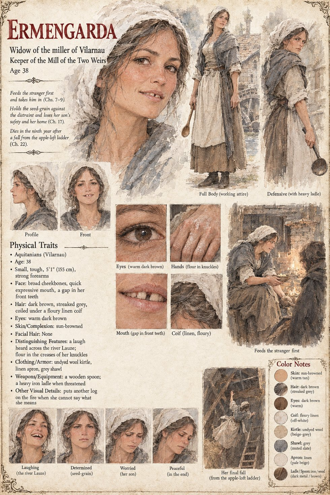

Ermengarda
Widow of the miller of Vilarnau · keeper of the Mill of the Two Weirs · mother of Gersenda and Peire · about 38 years old by her sheet
A small, tough, brown woman with a gap in her front teeth and a laugh that carries across the Lauze, who has run the Mill of the Two Weirs herself since the miller died of a cough four winters back, with a hired boy, a stubborn red ox called Lo Rog, a daughter of sixteen, Gersenda, and a son of eight. She puts a bowl into the stranger's hands at dusk for no better reason than that he looks cold, having been raised to think a cold man an obligation, and by the custom of the Charter the guest is thereby hers, since she fed him first. She feeds him again in the loft above the grinding-floor, and he bows to her with the same grave motion he gave the stone: she has been bowed to by a priest and never by someone who meant it. At Solan's fire she pushes him bodily into the front rank, and when Father Guiraut comes to say that the Moon-Man cannot bow to the god here, she tells him that he bows to everything, he bowed to the ox.
She knows from the first morning that something has entered her house which cannot be fed, and that it will cost her. When Bertran comes by night to warn them she will not go to the hills: a woman who leaves her seed to be counted by strangers might as well not have sown. On the first of Kerren the forty measures are in her loft when the sergeant climbs the ladder, and her son is thrown across it; looking up at the stranger over the boy's body, she has the face of a woman who has been told a total and is doing the sum. “They will come now.” She is one of the forty-nine in the quarry cleft, dies in the ninth year of a fall from the ladder of the apple-loft, and is buried under a chestnut with the whole High Ground in attendance. Her great-granddaughter has her laugh. The manuscript gives her no age; the sheet's thirty-eight and its flour-creased knuckles are its own.
“He bows to everything. He bowed to the ox.”
Appears In

Related Subjects


Related Records

On the twenty-eighth of Havren, at the great fire of Solan, Tomobe no Higaide bows to the god's flame as he was taught in his own country, with Ermengarda laughing behind him where she has pushed him into the front rank and the hearth-priest Father Guiraut watching with a serving-cloth over his arm; he will shortly refuse the first slice of the pig.